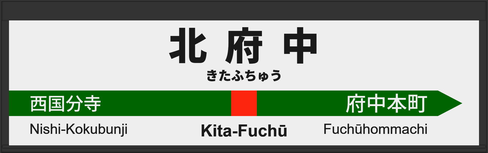

| ←西国分寺 | ■ 武蔵野線 | 府中本町→ |
|---|
2012年1月に常磐改良型ATOS放送を導入
2025年2月に宇都宮改良型に更新される。
| 1 | ■ 武蔵野線 府中本町方面 |
1番線次発予告 1番線接近放送 1番線到着放送 |
放送は「」です。 |
|---|---|---|---|
| 2 | ■ 武蔵野線 西船橋方面 |
2番線次発予告 2番線接近放送 2番線到着放送 |
放送は「普通 むさしの号 大宮行」です。 |
| 1 | ■ 武蔵野線 府中本町方面 |
1番線次発予告 1番線接近放送 1番線到着放送 |
放送は「各駅停車 府中本町行」です。 常磐改良型で、津田英治氏でした。 |
|---|---|---|---|
| 2 | ■ 武蔵野線 西船橋方面 |
2番線次発予告 2番線接近放送 2番線到着放送 |
放送は「」です。 常磐改良型でした。 |